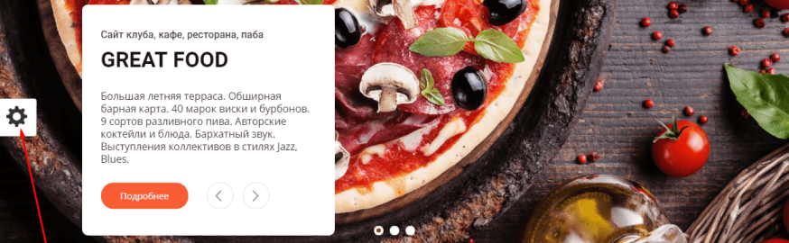
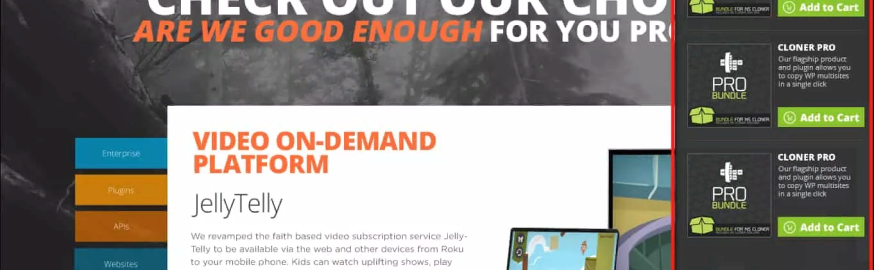

Про юзабилити
Как оформлять тексты для сайта, чтобы их читали
Все говорят: добавляй в тексты списки, разбивай на абзацы, разбавляй картинками и прочее, прочее, прочее...
Читать далееВсплывающие окна (поп-апы): какими они должны быть, и какие есть альтернативы

Всплывающие окна нужны не всегда. Разберем, в каких случаях стоит отказаться от всплывающих окон, какие из них нравятся людям, и чем можно заменить классические поп-апы.
Читать далееПодробное руководство по юзабилити сайдбара

Из этой статьи вы узнаете все о сайдбарах: нужны ли они, сколько боковых панелей должно быть на сайте, с какой стороны их делать, какие элементы должны в них быть.
Читать далее